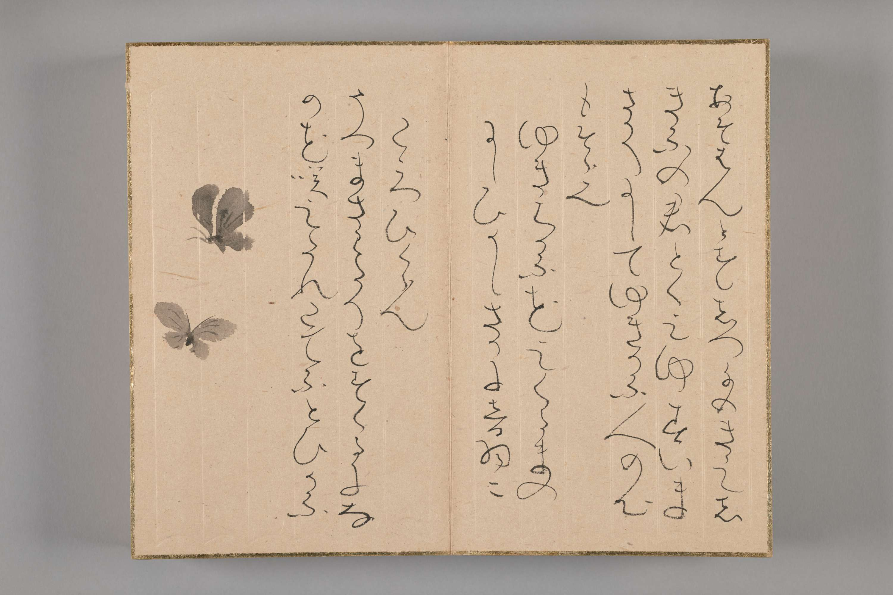

Chicago
“Image Catalog.” In Her Brush: Japanese Women Artists from the Fong-Johnstone Collection.
Denver: Fong-Johnstone Collection, Denver Art Museum, 2023. https://denverartmuseum.github.io/her-brush/image-catalog/.
MLA
“Image Catalog.” Her Brush: Japanese Women Artists from the Fong-Johnstone Collection.
Fong-Johnstone Collection, Denver Art Museum, 2023. https://denverartmuseum.github.io/her-brush/image-catalog/. Accessed DD Mon. YYYY.
ExpandUnidentified artist, Signed Mirei 美嶺, The Three Obediences (Sanjū), 1700s–mid-1800s, Ink and color on paper, Gift of Drs. John Fong and Colin Johnstone, 2018.146
ExpandKiyohara Yukinobu 清原雪信, 1643–1682, The Goddess Benzaiten and Her Lute (biwa), 1660s–80s, Ink, color, and gold on silk, Gift of Drs. John Fong and Colin Johnstone, 2018.150
ExpandOno no Ozū (or Ono no Otsū) 小野お通 (1559/68–before 1650), The Deified Sugawara Michizane Crossing to China (Totō Tenjin), early 1600s. Ink on paper. Gift of Drs. John Fong and Colin Johnstone, 2018.152.
ExpandDaitsū Bunchi 大通文智, 1619–1697, Bodhisattva of Myriad Acts of Compassion (Jihi Mangyō Bosatsu), 1600s, Ink on paper, Gift of Drs. John Fong and Colin Johnstone, 2018.153
Expandfig. 21: Murase Myōdō 村瀬明道 (1924–2013), Kan (barrier), late 1900s. Ink on paper with wood frame, overall 23⅝ × 41½ × 12 in. (60 × 105.4 × 30.5 cm). Gift of Drs. John Fong and Colin Johnstone, 2018.154A-C.
ExpandMurase Myōdō 村瀬明道, 1924–2013, Mu (no, nothingness) and Kan (barrier), Late 1900s, Ink on paper with wood frame, 2018.154A-C
ExpandMurase Myōdō 村瀬明道, 1924–2013, Breaking Waves in the Pines (shōtō), Late 1900s, Ink on paper, Gift of Drs. John Fong and Colin Johnstone, 2018.155
ExpandRyōnen Gensō 了然元総 (1646–1711), Poem, late 1600s–early 1700s. Ink on paper, 11¼ × 11 in. (28.6 × 27.9 cm). Gift of Drs. John Fong and Colin Johnstone, 2018.159.
ExpandImage by Utagawa Kunisada 歌川国貞 (1786–1864); Inscription by Ryūtei Tanehiko 柳亭種 (1783–1842), “The Nun Ryōnen (Ryōnen-ni)” from Kokon meifuden [Famous women of past and present], 1864 edition. Color woodblock print, 14⅞ × 9¾ in. (37.8 × 24.8 cm). Gift of Drs. John Fong and Colin Johnstone, 2018.160.
ExpandŌtagaki Rengetsu 太田垣蓮月, 1791–1875, Moon, Blossoming Cherry, and Poem, 1867, Ink and color on paper, Gift of Drs. John Fong and Colin Johnstone, 2018.164
ExpandSuganuma Ōhō 菅沼大鳳, 1891–1966, Rengetsu Working in Her Hut, 1935, Ink and color on paper, Gift of Drs. John Fong and Colin Johnstone, 2018.165
ExpandŌtagaki Rengetsu 太田垣蓮月, 1791–1875, Waka Poem, About 1828 or 1840, Ink on decorated paper, Gift of Drs. John Fong and Colin Johnstone, 2018.181.3.
ExpandVarious artists, Poem Slips (tanzaku), 1700–1900s, Paper with pigment, gold, silver, and ink, Gift of Drs. John Fong and Colin Johnstone, 2018.181.4-44
ExpandMiwa Teishin 三輪貞信, 1809–1902, Waka Poem on Poetry Slip (tanzaku), Late 1800s, Ink on decorated paper, Gift of Drs. John Fong and Colin Johnstone, 2018.182
ExpandŌhashi-dayū (The Tayū Ōhashi) 大橋太夫, Active 1700s, Two Poems, Mid–1700s, Ink on paper, Gift of Drs. John Fong and Colin Johnstone, 2018.183
ExpandKō (Ōshima) Raikin 高(大島)来禽, Active late 1700s, Autumn Landscape, Late 1700s, Ink and light color on paper, Gift of Drs. John Fong and Colin Johnstone, 2018.193
Expandfig. 2: Kō (Ōshima) Raikin 高(大島)来禽 (active late 1700s), Autumn Landscape (detail), late 1700s. Ink and light color on paper, 12⅞ × 8½ in. (32.7 × 21.6 cm). Gift of Drs. John Fong and Colin Johnstone, 2018.193.
Expandfig. 1: Katō Seiko 加藤青湖 (active 1800s), Sparrows and Bamboo (detail), about 1872. Ink and color on silk, 9⅜ × 16⅛ in. (125.4 × 41 cm). Gift of Drs. John Fong and Colin Johnstone, 2018.212.
ExpandAttributed to Oda Shitsushitsu 織田瑟瑟, 1779–1832, Blossoming Cherry Tree, Early 1800s, Ink and color on paper, Gift of Drs. John Fong and Colin Johnstone, 2018.213
ExpandTakeuchi Shōran 武内小鸞, Active late 1700s–early 1800s, Bush Warbler on a Plum Branch, Early 1800s, Ink and color on silk, 2018.215
ExpandYamamoto Shōtō 山本緗桃, 1757–1831, Chrysanthemums, Late 1700s–early 1800s, Ink, color, and gold on silk, Gift of Drs. John Fong and Colin Johnstone, 2018.216
Expandfig. 3: Yamamoto Shōtō 山本緗桃 (1757–1831), Chrysanthemums (detail), late 1700s–early 1800s. Ink, color, and gold on silk, 9⅛ × 7⅜ in. (23.2 × 18.7 cm). Gift of Drs. John Fong and Colin Johnstone, 2018.216.
ExpandTakabatake Shikibu 高畠式部, 1785–1881, Signboard, 1863, Ink on paper, Gift of Drs. John Fong and Colin Johnstone, 2018.253
ExpandArtist unknown, Signed Kiyohara Yukinobu 清原雪信, 1643–1682, Genji Peeping at the Young Murasaki, 1600s, Ink and color on silk, Gift of Drs. John Fong and Colin Johnstone, 2018.255
ExpandKuroda Kōryō 黒田光良, 1823–1895, Two Teabowls in the Style of Rengetsu (Rengetsu-yaki), Late 1800s, Glazed ceramic, Gift of Drs. John Fong and Colin Johnstone, 2018.259.1-2.
ExpandŌtagaki Rengetsu 太田垣蓮月, 1791–1875, Sake Decanter (tokkuri), 1800s, Glazed ceramic, Gift of Drs. John Fong and Colin Johnstone, 2021.196
ExpandŌtagaki Rengetsu 太田垣蓮月, 1791–1875, Sweets Plates with Paintings and Poems, 1800s, Ink and color on cedar planks, Gift of Drs. John Fong and Colin Johnstone, 2021.198.1-5
Expandfig. 8: Ōtagaki Rengetsu 太田垣蓮月 (1791–1875), Sweets Plate with Painting and Poem, 1800s. Ink and color on cedar plank, 5¼ × 6½ in. (13.3 × 16.5 cm). Gift of Drs. John Fong and Colin Johnstone, 2021.198.XX.
Expandfig. 9: Ōtagaki Rengetsu 太田垣蓮月 (1791–1875), Travel Journal to Arashiyama (Arashiyama hana no ki), 1800s. Ink and color on paper, 1¼ × 4¼ × 6½ in. (3.2 × 10.8 ×16.5 cm). Gift of Drs. John Fong and Colin Johnstone, 2021.206.

ExpandŌtagaki Rengetsu 太田垣蓮月, 1791–1875, Travel Journal to Arashiyama (Arashiyama hana no ki), 1800s, Ink and color on paper, Gift of Drs. John Fong and Colin Johnstone, 2021.206
ExpandAttributed to Nonoguchi Ryu-ho 野々口立圃, 1595–1669, Haibun and Haiga of Crickets, Mid-1600s, Ink on paper, Gift of Drs. John Fong and Colin Johnstone, 2020.570
Expandfig. 14: Photograph of Ōishi Junkyō. From The Mainichi Graphic, 4 January 1956, published by The Mainichi Newspapers Co., Ltd. Source: Wikimedia Commons
Expandfig. 18: Ōishi Junkyō 大石順教 (1888–1968), Bird and Grapes, date not known. Hanging scroll: ink and color on silk, 44½ × 10⅝ in. (113 × 27 cm). Private collection.
Expandfig. 19: Murase Myōdō, 2008. Courtesy of photographer Ikazaki Shinobu.
Expandfig. 2: Shinkei (1649–1706), Portrait of Daitsū Bunchi, 1698. Hanging scroll: ink and color on silk, 51⅝ × 21¾ in. (131.1 × 55.2 cm). Collection of Enshōji. Source: Amamonzeki: A Hidden Heritage: Treasures of the Japanese Imperial Convents (Tokyo: Sankei Shimbun, 2009), pl. 37.
Expandfig. 4:Ryōnen Burning Her Face, illustration from Kinsei meika shogadan [Famous calligraphers and painters of recent ages], vol. 4, 1844. Waseda University Library.
Expandllustration by Mikuma Katen (三熊思孝), Matsuya Teahouse, from the Kinsei Kijin近世畸伝, woodblock edition of 1788. Courtesy DIAL.num - Vitrine numérique des bibliothèques de l’UCL. Creative Commons Attribution 4.0 International license.
ExpandUnknown maker, Lidded Wooden Box (tomobako) with Inscription by Priest Kōen of the Jinkō-in temple, 1800s, Wood, Gift of Drs. John Fong and Colin Johnstone, RA.2021.198
ExpandTomioka Tessai, detail of a posthumous portrait of Ōtagaki Rengetsu 太田垣蓮月. Source: Tokuda Kōen, Otakagaki Rengetsu 大田垣蓮月 (Tōkyō: Kodansha, 1982).